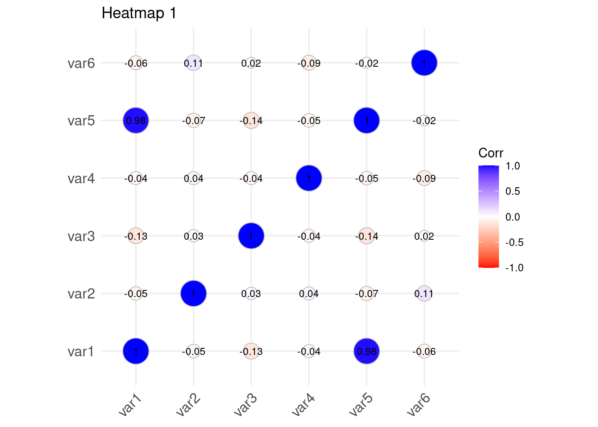

Chapter 9 Time Series Analysis
9.1 Introduction to Time Series Data
The time series data refers to a sequence of data points collected or recorded at regular time intervals. Each data has a specific time stamps and the data is always dependent on the previous time and after. The order of the rows doesn’t matter but the timestamp does, this is what is referred to as temporal ordering. Here are some of the distinct characteristics of time series data;
- Trend: the time series data tend to show long-term increase or decrease over a period of time.
- Temporal Dependence: In time series, the current data values are often influenced by the previous data values and may impact the future ones.
- Seasonality: some of the time series data often exhibit repeating patterns at regular intervals for instance daily, monthly and annually.
- Autocorrelation: current values can be correlated with future or previous time points.
- Stationarity: Time series is often stationary if its statistical properties for instance mean and variance remain constant over time.
Time series has several applications in the industry, here are some of its applications;
- Forecasting; predicting future values based on the previous and current values.
- Anomaly detection; identify outliers or any unusual patterns over a certain period of time.
- Seasonality; Find and analyze recurring patterns.
- Trend Analysis; Identify trends or patterns over a certain period of time.
- Used in economic and financial analysis to predict economic indicators such as GDP, exchange rates and inflation rates.
- Measuring natural phenomena like measuring rainfall in weather forecasting.
9.2 Basic Time Series Concepts
- Components of Time Series

The above graph represents an example of a time series data. To understand the underlying structure in time series, it is broken down into three components; trend, seasonality and noise. These components characterize the pattern and behavior of data over time.
- Trend; This will show the general direction of data whether it is upward(increasing) or downward(decreasing). They indicate long-term movement depicting overall growth or decline. The above chart shows that there was an overall growth(upward trend) over the year
- Seasonality; It is the predictable pattern that appear regularly. In the chart above there is a quarterly rise and drop of values.
- Cycles; represents the fluctuations that don’t have a fixed period.
- Noise; its is the residual variability of data that has no explanations by the factors affecting the trend. The variability is always small compared to the trend and cycle.
Lets use the R inbuilt data set, AirPassengers to decompose the time series data into trend, seasonality …
## [1] 112 118 132 129 121 135# Decompose the air passengers time series
decomposed_ts <- decompose(AirPassengers)
# Plotting will be done later
# decomposed_ts # uncomment to show the data<-Add a practical exercise->
- Visualization of Time Series Data
Visualization is a crucial step in the time series analysis process as it enables;
- the researcher to analyze the important concepts in the data such as trend, seasonality and noise
- the analyst to track perfomance over time
- to diagnose alien behaviors like sudden spikes and presence of outliers
- the analyst to communicate insights to the non-technical stake holders.
Lets visualize the time series data of the AirPassengers.
plot.ts(AirPassengers,
main = "AirPasengers Time Series ",
ylab = "Passengers",
xlab = "Time",
col = "blue",
lwd = 2)
Lets now visualize the decomposed time series.

The number of Air Passengers has increased from 1950 to 1960. There is an upward trend. Now lets repeat the process using the ggplot2 library.
# Load the library
library(ggplot2)
# Convert the air passengers to a dataframe
df_airpassengers <- data.frame(
# Month = as.Date(time(AirPassengers)), # Extracting the time component
Month = seq(from = as.Date("1949-01-31"), to = as.Date("1960-12-31"), by = "month"),
Passengers = as.numeric(AirPassengers) # Extracting the passenger counts
)
head(df_airpassengers)## Month Passengers
## 1 1949-01-31 112
## 2 1949-03-03 118
## 3 1949-03-31 132
## 4 1949-05-01 129
## 5 1949-05-31 121
## 6 1949-07-01 135# Plot the data
ggplot(df_airpassengers, aes(x = Month, y = Passengers)) +
geom_line(color = "blue", size = 1) + # Line for the time series data
labs(title = "Air Passengers Time Series Data", # Title
x = "Month", # X-axis label
y = "Passengers") + # Y-axis label
theme_minimal() # Apply a minimal theme## Warning: Using `size` aesthetic for lines was deprecated in
## ggplot2 3.4.0.
## ℹ Please use `linewidth` instead.
## This warning is displayed once every 8 hours.
## Call `lifecycle::last_lifecycle_warnings()` to see
## where this warning was generated.
<-Add a practical exercise->